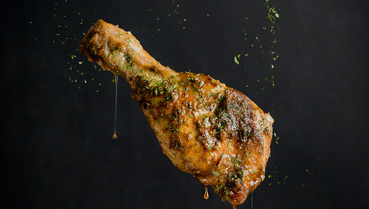
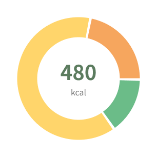
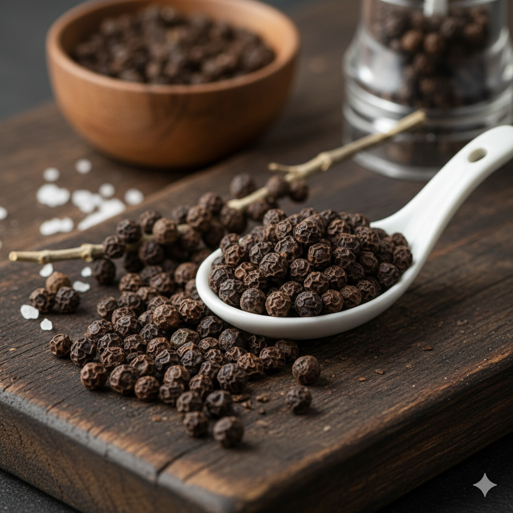

食材準備
雞腿400g
檸檬1顆
新鮮迷迭香3枝
橄欖油2大匙
黑胡椒1/2小匙
海鹽1小匙
蒜末1小匙
35分鐘
2人份
檸香烘烤雞腿
外皮金黃酥脆，檸檬清香融合迷迭香的淡雅香氣，是簡單卻令人回味的家常西式料理。
- 準備時間：15分鐘｜烘烤：20分鐘
- 料理類型：西式料理・主菜
- 飲食偏好：高蛋白、低碳水、健身餐
- 卡路里／份：480 kcal
烹飪步驟
Step
01
醃製雞腿
雞腿排加入檸檬汁、橄欖油、海鹽、黑胡椒、蒜末與迷迭香，醃製至少 30 分鐘。
Step
02
烘烤
將雞腿放入烤盤上，皮朝上，烘烤30–35 分鐘至金黃酥脆。
Step
03
擺盤
搭配檸檬片與新鮮香草即可上桌。
營養資訊

以每份計算
- 蛋白質18g
- 碳水化合物4g
- 脂肪20g
必備食材
迷迭香
3枝
辛香料
檸檬
1顆
蔬果
雞腿肉
400g
肉類
黑胡椒
1/2小匙
辛香料

一起上桌吧

味噌鮭魚湯
溫潤味噌湯底配上鮮嫩鮭魚片，暖心暖胃的日式家常湯品。
難度：★★★☆☆

檸香奶油煎鮭魚
外皮酥香、肉質鮮嫩，佐以檸檬的清爽與迷迭香的芳香，不需太多調味料就可以做出餐廳級的味道
難度：★★★★☆

黑胡椒蜜汁豬排
外層香煎鎖汁，淋上香甜微辣的黑胡椒蜜汁，口感濃郁又下飯。
難度：★★★★☆

韓式泡菜炒豬肉
微辣泡菜搭配鮮嫩豬肉，開胃又下飯，香氣撲鼻。
難度：★★★☆☆